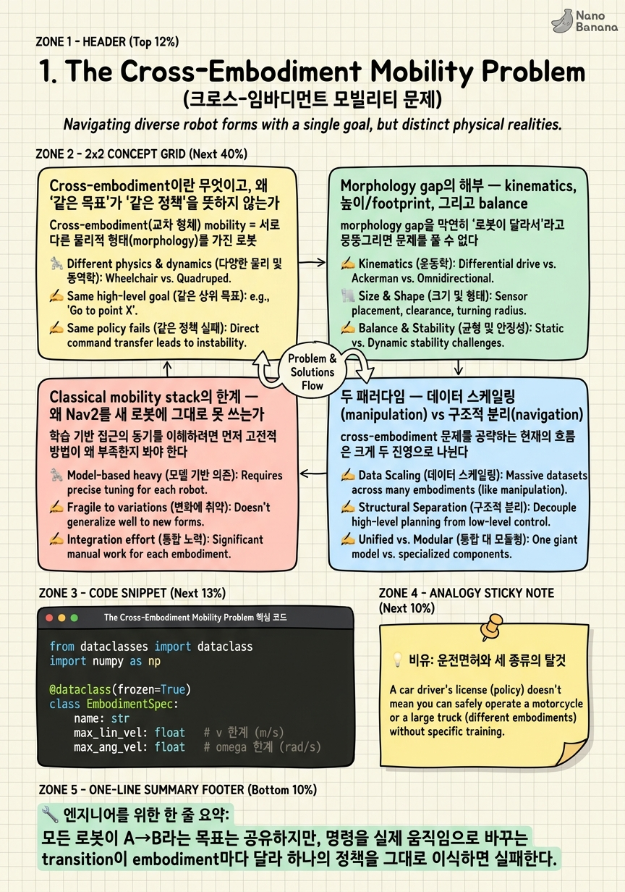

The Cross-Embodiment Mobility Problem

🎯 학습 목표
- cross-embodiment mobility가 왜 어려운 문제인지 morphology·kinematics·sensor 관점에서 설명할 수 있다
- classical mobility stack이 새 embodiment로 확장될 때의 한계를 안다
- 데이터 스케일링 패러다임과 구조적 분리 패러다임의 차이를 한 문장으로 말할 수 있다
- navigation의 cross-embodiment가 manipulation과 성격이 다른 이유를 설명할 수 있다
- COMPASS가 전체 지형에서 어디에 위치하는지 좌표를 잡는다
이 강의는 하나의 질문에서 출발한다. 바퀴로 굴러가는 로봇, 네 다리로 걷는 로봇, 두 다리로 균형을 잡는 휴머노이드를 '같은' 내비게이션 정책으로 움직일 수 있는가? 직관적으로는 셋 다 결국 "A 지점에서 B 지점으로 이동한다"는 동일한 목표를 갖는다. 하지만 실제로 하나의 학습된 정책을 세 로봇에 그대로 얹으면 처참하게 실패한다. 왜 그런지, 그리고 최근 연구가 이 문제를 어떻게 나눠서 공략하는지 이해하는 것이 이 코스 전체의 지도(map)다.
1챕터는 문제 정의와 지형도(landscape)를 담당한다. 구체적인 아키텍처나 손실 함수는 뒤 챕터에서 하나씩 뜯어보고, 여기서는 (1) cross-embodiment mobility가 정확히 무엇을 요구하는지, (2) 왜 morphology gap이 단순한 파라미터 차이가 아니라 분포 자체를 바꾸는 문제인지, (3) 현재 분야가 '데이터 스케일링(manipulation 진영)'과 '구조적 분리(navigation 진영, COMPASS)'라는 두 개의 큰 흐름으로 갈라져 있는지를 좌표축으로 세운다.
이 코스의 축은 COMPASS(arXiv:2502.16372)다. NVIDIA·UC Berkeley·UT Austin이 2025년 2월에 낸 이 논문은 IL(imitation learning) base를 얼려두고, embodiment마다 Residual RL specialist를 학습한 뒤, 그들을 하나의 generalist로 distill하는 3단계 파이프라인을 제안한다. 1챕터를 마치면 COMPASS가 왜 '데이터를 더 모으자' 대신 '구조를 분리하자'를 택했는지, 그 선택이 navigation이라는 문제의 성격에서 어떻게 자연스럽게 따라 나오는지를 설명할 수 있게 된다.
핵심 내용
Cross-embodiment이란 무엇이고, 왜 '같은 목표'가 '같은 정책'을 뜻하지 않는가
Cross-embodiment(교차 형체) mobility = 서로 다른 물리적 형태(morphology)를 가진 로봇들을 하나의 학습된 정책 또는 학습 파이프라인으로 목표 지점까지 이동시키는 문제.
먼저 문제를 형식화하자. 어떤 로봇이든 내비게이션은 결국 상태 \(x_t\)에서 행동 \(a_t\)를 내는 정책 \(\pi(a_t \mid x_t)\)로 쓸 수 있다. COMPASS의 경우 상태는 \(x_t=(I_t, v_t, g_t, e)\) — RGB 이미지 \(I_t\), 현재 속도 \(v_t\), 목표/경로 \(g_t\), 그리고 embodiment를 식별하는 임베딩 \(e\) — 이고, 행동은 \(a_t=(v_t, \omega_t)\), 즉 선속도와 각속도로 이루어진 velocity command다. 이 명령은 다시 로봇별 low-level joint controller로 넘어가 바퀴 회전이나 다리 관절 토크로 변환된다.
여기서 핵심 관찰이 나온다. 겉으로 보면 세 로봇 모두 같은 \(x_t \mapsto a_t\) 함수를 학습하면 될 것 같다. 하지만 같은 \((v_t, \omega_t)\) 명령이 세 로봇에서 전혀 다른 결과를 낳는다. 바퀴 로봇 Nova Carter는 \(\omega_t\)를 거의 즉시 반영하지만, 휴머노이드 Unitree H1은 그 각속도를 내려면 먼저 무게중심을 옮기고 발을 딛는 여러 스텝의 balance 동역학을 거쳐야 한다. 즉 정책이 학습해야 할 것은 목표가 아니라 "이 몸으로 이 명령을 내면 실제로 어떻게 움직이는가"라는 embodiment별 transition이다.
그래서 '같은 목표(A→B)'가 결코 '같은 정책'을 함의하지 않는다. 목표 공간과 action 인터페이스가 공유되더라도, 그 action을 실제 움직임으로 매핑하는 함수 — kinematics, 관성, 지연, balance 제약 — 이 embodiment마다 다르기 때문이다. cross-embodiment 문제의 어려움은 바로 이 매핑의 다양성을 어떻게 한 정책이 흡수하느냐에 있다.
실제로 COMPASS는 네 가지 embodiment를 대상으로 한다: Nova Carter(wheeled), Unitree H1(humanoid), Unitree G1(humanoid), Spot Mini(quadruped). 이 네 로봇을 하나의 generalist 정책으로 커버하는 것이 이 코스가 끝까지 추적할 목표다.
Morphology gap의 해부 — kinematics, 높이/footprint, 그리고 balance
morphology gap을 막연히 '로봇이 달라서'라고 뭉뚱그리면 문제를 풀 수 없다. 이 gap을 세 개의 저차원 축으로 분해하는 것이 COMPASS 진영의 핵심 통찰이다.
Kinematic constraint(운동학 제약) = 로봇이 물리적으로 낼 수 있는 \((v,\omega)\)의 집합과 그 결합 관계. 예를 들어 differential-drive 바퀴 로봇은 순간적으로 제자리 회전(\(v=0, \omega\neq0\))이 가능하지만 옆으로 미끄러질 수는 없다(nonholonomic). 4족 로봇은 게걸음(lateral)도 가능하다. 이 제약이 다르면 같은 경로라도 실현 가능한 명령 시퀀스가 완전히 달라진다.
Footprint & height(발자국과 높이) = 로봇이 차지하는 평면 크기와 카메라/센서의 지면 높이. Carter는 낮고 넓적하지만 H1은 키가 크고 좁다. 이는 두 가지를 바꾼다. 첫째, 통과 가능성(clearance): 좁은 통로나 낮은 장애물 판단이 달라진다. 둘째, 관측 자체가 달라진다 — 같은 장면을 30cm 높이 카메라와 150cm 높이 카메라로 보면 픽셀 분포가 크게 다르다. 즉 morphology는 action뿐 아니라 observation 분포에도 shift를 만든다.
Balance & dynamics(균형과 동역학) = 명령을 실제 움직임으로 바꿀 때 개입하는 관성·지연·안정성. 바퀴는 정적으로 안정(static stability)해 명령이 거의 즉시 반영되지만, 휴머노이드는 동적 균형(dynamic balance)을 유지해야 하고 명령 반영에 지연과 오버슈트가 생긴다. RL specialist가 embodiment마다 필요한 이유가 바로 이 축이다.
중요한 것은 이 세 축이 저차원이라는 점이다. 로봇의 전체 형태는 무한히 다양해 보이지만, navigation 관점에서 필요한 morphology 정보는 사실상 '이런 kinematic 제약, 이 정도 높이/footprint, 이 정도 balance 난이도'로 압축된다. 이 저차원성이 뒤에서 볼 '얇은 embodiment conditioning'이 통하는 이유이자, navigation이 manipulation과 갈라지는 지점이다.
Classical mobility stack의 한계 — 왜 Nav2를 새 로봇에 그대로 못 쓰는가
학습 기반 접근의 동기를 이해하려면 먼저 고전적 방법이 왜 부족한지 봐야 한다. Classical mobility stack = 인지(perception)·지도(mapping)·전역 계획(global planning)·지역 제어(local control)를 손으로 설계한 모듈로 파이프라인화한 시스템. ROS의 Nav2, 그리고 그 위의 marathon2 같은 스택이 대표적이다.
이런 스택은 특정 로봇, 특히 wheeled robot에 대해서는 대단히 잘 튜닝되어 있고 산업 현장에서 검증되었다. 문제는 이식성이다. 각 모듈이 특정 embodiment의 가정을 깊게 박아두고 있다. local planner의 motion model은 differential-drive를 가정하고, costmap의 inflation radius는 특정 footprint에, controller gain은 특정 동역학에 맞춰져 있다.
이 스택을 휴머노이드로 옮기면 어떤 일이 벌어질까. motion model을 다시 쓰고, footprint와 clearance 파라미터를 재튜닝하고, 균형을 고려한 새 local controller를 붙이고, 카메라 높이가 바뀐 만큼 perception 파이프라인도 손봐야 한다. 사실상 재개발에 가깝다. 즉 classical stack의 비용은 로봇 종류 × 엔지니어링 시간으로 곱해진다. embodiment가 N개면 N번의 튜닝 프로젝트가 필요하다.
여기서 end-to-end learning의 동기가 나온다. 만약 정책이 데이터로부터 '공통의 기하·동역학 추론'을 학습하고 embodiment 차이는 얇은 conditioning으로만 흡수한다면, N번의 수작업 대신 한 번의 학습 파이프라인으로 여러 로봇을 커버할 수 있다. 물론 이것은 이상이고, 실제로는 그 '한 번의 학습'을 어떻게 구성하느냐에서 다음 절의 두 패러다임이 갈라진다.
두 패러다임 — 데이터 스케일링(manipulation) vs 구조적 분리(navigation)
cross-embodiment 문제를 공략하는 현재의 흐름은 크게 두 진영으로 나뉜다. 이 대비가 이 코스 전체를 관통하는 프레임이다.
패러다임 1: 데이터 스케일링/pretraining (manipulation 중심). 여러 로봇의 대규모 궤적을 한데 모아 거대한 정책을 사전학습하면, embodiment 간 positive transfer가 저절로 emergent하게 나타난다는 접근이다. 대표작으로 Open-X/RT-X(arXiv:2310.08864)는 22개 로봇, 100만+ 궤적을 모아 positive transfer를 보였고, HPT(arXiv:2409.20537)는 이질적 로봇을 공유 trunk로 pre-train하며, CrossFormer는 900K 궤적·20 embodiment를 단일 transformer로 다룬다. OpenVLA(arXiv:2406.09246)와 π0, GR00T N1(arXiv:2503.14734)도 이 계보다.
패러다임 2: sim-centric 구조적 분리 (navigation 중심, COMPASS 진영). 데이터를 무한히 모으는 대신, 문제를 구조적으로 쪼갠다. 공통의 기하·동역학 추론은 world model 기반 IL로 사전학습(공통)하고, embodiment별 차이는 Residual RL specialist로 흡수한 뒤, 그것들을 policy distillation으로 하나의 generalist에 합친다. 시뮬레이터에서 값싸게 데이터를 생성한다는 점에서 sim-centric이다.
두 패러다임의 차이를 한 문장으로 요약하면 이렇다. 패러다임 1은 "다양성을 데이터로 흡수한다", 패러다임 2는 "다양성을 아키텍처로 분리한다." 아래 표가 대비를 정리한다.
| 축 | 데이터 스케일링 (Open-X, GR00T) | 구조적 분리 (COMPASS) |
|---|---|---|
| 다양성 처리 | 대규모 실로봇 데이터로 흡수 | residual + distillation으로 분리 |
| 데이터 원천 | real-world 궤적 수집 | 주로 simulation |
| 핵심 자원 | 데이터·컴퓨트 | 구조 설계·sim 튜닝 |
| 주 전장 | manipulation | navigation |
| unseen 대응 | 스케일로 일반화 기대 | 얇은 conditioning 교체 |
어느 쪽이 옳으냐는 문제의 성격에 달려 있다. 그 성격 차이를 다음 절에서 본다.
왜 navigation은 manipulation과 다른가 — action space 공통성이라는 결정적 비대칭
두 패러다임 중 어느 쪽이 유리한지는 문제가 navigation이냐 manipulation이냐에 따라 극적으로 달라진다. 그 이유의 핵심은 action space의 공통성이다.
navigation에서는 거의 모든 로봇의 행동이 \((v, \omega)\) — 선속도와 각속도 — 라는 2차원(2D 평면 기준) 공간으로 사실상 공통이다. Carter든 H1이든 Spot이든, 내비게이션 층에서 내리는 명령은 "이 방향으로 이 속도로 가라"이고, 몸에 맞는 관절 제어는 그 아래 low-level controller가 담당한다. 그 결과 morphology 차이는 앞서 본 대로 kinematic constraint·height·footprint·balance라는 저차원 요인으로 압축된다.
반면 manipulation에서는 이 공통성이 무너진다. gripper, 흡착 패드, 다지(multi-finger) 손, 병렬 조(parallel jaw) 등 end-effector의 종류가 극심하게 다양하고, 각 로봇의 관절 수와 작업 공간(workspace)이 제각각이며, 접촉(contact) 물리가 지배적이다. 즉 action space 자체가 embodiment마다 근본적으로 다르다. 이런 상황에서는 다양성을 구조적으로 분리하기 어렵고, 방대한 데이터로 흡수하는 것이 거의 필수가 된다 — 그래서 Open-X/GR00T 같은 데이터 스케일링이 manipulation의 주류다.
여기서 COMPASS 진영의 핵심 insight가 명확해진다. navigation은 action space가 공통이므로, '공통 기하 추론을 크게 학습하고 embodiment는 얇게 conditioning'하는 편이 데이터 스케일링보다 효율적이다. 무한한 실로봇 데이터 없이도, world model이 공통 dynamics를 잡아주고 residual이 얇은 차이만 메우면 된다. 이 비대칭이 COMPASS가 데이터가 아닌 구조를 택한 근본 이유다.
이제 좌표가 잡혔다. 이 코스는 navigation 쪽, 구조적 분리 진영에 서서 COMPASS를 해부한다. 다음 챕터부터는 그 구조의 첫 번째 층 — 공통 dynamics를 latent로 압축하는 world model(X-Mobility) — 을 뜯어본다. COMPASS는 이 지형도에서 '데이터 스케일링을 우회한 sim-centric navigation generalist'라는 좌표에 위치한다.
💡 비유로 이해하기
당신이 운전면허 학원을 운영한다고 하자. 학생들은 결국 모두 "목적지까지 안전하게 간다"는 같은 목표를 배운다. 그런데 승용차, 오토바이, 그리고 두 발 자전거를 각각 몰아야 한다면? 도로 규칙, 지도 읽기, 위험 예측 같은 공통 지식은 세 탈것에서 똑같이 쓰인다. 하지만 핸들을 꺾었을 때 몸이 어떻게 반응하는지 — 승용차는 즉시 돌지만 오토바이는 몸을 기울여야 하고 자전거는 균형까지 잡아야 한다 — 는 탈것마다 완전히 다르다.
데이터 스케일링 진영은 이렇게 말한다. "세 탈것을 수천 시간씩 다 태워보게 하면, 학생의 몸이 알아서 공통 감각과 개별 감각을 다 익힐 것이다." COMPASS의 구조적 분리 진영은 다르게 말한다. "도로 규칙과 지도 읽기(공통)는 교실에서 한 번만 가르치고, 탈것별 핸들 감각(residual)만 짧게 연습시킨 뒤, 셋을 잘하는 학생 한 명을 길러내자." 교실 수업이 world model, 탈것별 연습이 Residual RL, 통합 학생이 generalist policy다.
그리고 왜 이 방식이 자동차 정비(=manipulation)가 아니라 운전(=navigation)에서 잘 통할까? 운전은 결국 '가속·조향'이라는 공통 조작으로 수렴하지만, 정비는 엔진·타이어·전기계통마다 손에 쥐는 공구와 동작이 전혀 달라 공통 교실 수업으로 묶기 어렵기 때문이다. 바로 이 차이가 두 패러다임이 각각 다른 전장을 지배하는 이유다.
💻 코드 예시
cross-embodiment의 핵심 추상화를 코드로 못 박아보자. 아래는 embodiment마다 다른 kinematics·footprint·sensor 스펙을 dataclass로 선언하고, 그럼에도 정책이 마주하는 인터페이스는 공통의 (v, ω) velocity command 하나로 통일된다는 것을 보여준다. 즉 '차이는 스펙 안에, 인터페이스는 공통으로'라는 COMPASS의 설계 철학을 그대로 표현한 것이다.
from dataclasses import dataclass
import numpy as np
@dataclass(frozen=True)
class EmbodimentSpec:
name: str
max_lin_vel: float # v 한계 (m/s)
max_ang_vel: float # omega 한계 (rad/s)
holonomic: bool # 옆으로 이동 가능한가 (kinematic constraint)
footprint_radius: float # 충돌 반경 (m)
cam_height: float # observation 분포를 바꾸는 센서 높이 (m)
balance_penalty: float # 균형 난이도 -> residual RL이 흡수할 몫
# 네 embodiment: 차이는 오직 '스펙' 안에만 존재한다
CARTER = EmbodimentSpec("nova_carter", 1.5, 2.0, False, 0.30, 0.35, 0.0)
SPOT = EmbodimentSpec("spot_mini", 1.6, 2.5, True, 0.35, 0.50, 0.3)
H1 = EmbodimentSpec("unitree_h1", 1.2, 1.0, True, 0.25, 1.50, 1.0)
G1 = EmbodimentSpec("unitree_g1", 1.0, 1.0, True, 0.22, 1.20, 1.0)
def clip_command(v_cmd: float, w_cmd: float, spec: EmbodimentSpec):
"""공통 (v, omega) 명령을 이 몸이 실제로 낼 수 있는 범위로 사영."""
v = float(np.clip(v_cmd, -spec.max_lin_vel, spec.max_lin_vel))
w = float(np.clip(w_cmd, -spec.max_ang_vel, spec.max_ang_vel))
return v, w
# 정책이 내리는 '이상적' 명령은 embodiment와 무관하게 동일하다
ideal_v, ideal_w = 1.4, 1.8
for spec in (CARTER, SPOT, H1, G1):
v, w = clip_command(ideal_v, ideal_w, spec)
print(f"{spec.name:12s} -> v={v:.2f}, w={w:.2f} (cam@{spec.cam_height}m)")EmbodimentSpec은 morphology gap의 세 축을 그대로 필드로 옮겼다 — holonomic(kinematic constraint), footprint_radius/cam_height(footprint·height), balance_penalty(balance/dynamics). 이것이 1챕터에서 말한 '저차원으로 압축된 morphology 정보'의 구체적 형태다.
네 로봇을 정의하면서도 정책이 부르는 함수 clip_command의 시그니처는 완전히 동일하다. 정책은 embodiment-agnostic한 이상적 명령 (1.4, 1.8)을 내고, 각 몸의 한계로 사영(projection)만 될 뿐이다. 실행하면 Carter는 그대로 통과하지만 H1은 w=1.0으로 잘린다 — 같은 명령이 몸마다 다르게 실현된다는 것을 수치로 확인할 수 있다.
주목할 점은 cam_height가 출력에 함께 찍힌다는 것이다. 이는 morphology가 action만이 아니라 observation 분포까지 바꾼다는 사실을 상기시킨다. COMPASS는 이 스펙 중 대부분을 명시적으로 코딩하는 대신, embodiment embedding \(e\)로 압축해 정책이 데이터로부터 흡수하게 한다. 이 코드는 그 압축 이전의 '날것 그대로의 차이'를 눈으로 보게 해주는 교보재다.
🏭 현업에서의 평가
✅ 시니어가 보는 것
- morphology gap을 '로봇이 다르다'로 뭉개지 않고 kinematics·footprint/height·balance라는 구체적 축으로 분해해 설명하는가
- navigation의 action space 공통성(v, ω)이 왜 manipulation과 근본적으로 다른 판을 만드는지 자기 언어로 설명하는가
- 데이터 스케일링과 구조적 분리를 우열이 아니라 '문제 성격에 따른 선택'으로 프레이밍하는가
- classical stack(Nav2)의 한계를 '비용이 embodiment 수만큼 곱해진다'는 스케일링 관점으로 짚는가
- observation shift(카메라 높이 변화)까지 morphology의 결과로 인지하는가
⚠️ 레드 플래그
- "데이터만 많으면 다 된다"고 단정하며 navigation/manipulation 구분 없이 스케일링을 만능으로 취급
- cross-embodiment를 단순 도메인 랜덤화나 파라미터 스윕 문제로 축소
- morphology 차이가 action에만 영향을 준다고 보고 observation 분포 변화를 놓침
- COMPASS의 3단계를 '왜 그렇게 나눴는가' 없이 순서만 암기해서 나열
- classical stack을 무조건 구식으로 폄하하며 실전 검증된 강점(안정성·튜닝 성숙도)을 인정하지 않음
🎤 예상 인터뷰 질문
- 바퀴 로봇에 잘 동작하는 학습된 내비게이션 정책을 휴머노이드로 옮겼더니 실패했다. 어떤 요인들이 무너졌는지, 관측·행동·동역학 층위로 나눠 진단해보라.
- manipulation 진영은 대규모 데이터(Open-X), navigation 진영(COMPASS)은 구조적 분리를 택했다. 이 갈림의 근본 원인을 action space 관점에서 설명하라.
- 새로운 embodiment(예: 외발 호핑 로봇)를 이 프레임에 추가한다면, morphology gap의 어느 축이 가장 문제이며 어떤 구성요소로 흡수하겠는가?
✨ 핵심 요약
같은 목표 ≠ 같은 정책
모든 로봇이 A→B라는 목표는 공유하지만, 명령을 실제 움직임으로 바꾸는 transition이 embodiment마다 달라 하나의 정책을 그대로 이식하면 실패한다.
morphology gap은 세 축으로 분해된다
kinematic constraint, footprint/height, balance/dynamics — 이 저차원 세 축이 cross-embodiment 난이도의 실체다.
morphology는 observation도 바꾼다
카메라 높이 차이처럼 morphology gap은 action space뿐 아니라 관측 분포에도 shift를 일으킨다.
classical stack의 비용은 곱셈이다
Nav2 같은 스택은 embodiment마다 재튜닝/재개발이 필요해 비용이 '로봇 수 × 엔지니어링'으로 곱해진다 — end-to-end learning의 동기다.
두 패러다임: 흡수 vs 분리
데이터 스케일링은 다양성을 데이터로 흡수하고, 구조적 분리는 다양성을 아키텍처로 나눈다.
action 공통성이 판을 가른다
navigation은 (v, ω)로 action이 공통이라 구조적 분리가 유리하고, manipulation은 end-effector가 극심히 다양해 데이터 스케일링이 필수다.
COMPASS의 좌표
COMPASS는 sim-centric·navigation·구조적 분리 진영에 위치한 cross-embodiment mobility generalist다.
얇은 conditioning의 근거
navigation에서 morphology가 저차원으로 압축되기 때문에, 큰 공통 추론 + 얇은 embodiment conditioning이 무한한 실데이터보다 효율적일 수 있다.